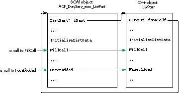
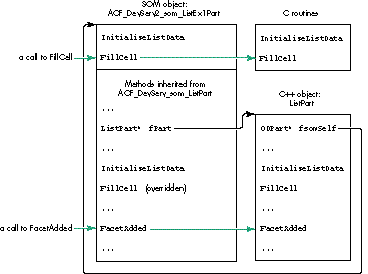
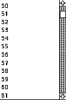
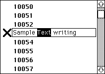
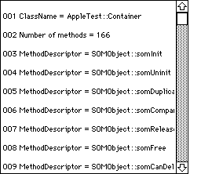

OpenDoc, Apple's compound-document architecture, isn't just for
desktop publishing. The underlying IBM System Object Model (SOM)
can be used to implement dynamic inheritance within and between
applications, giving you the benefits of object-oriented
programming while avoiding code duplication and the need to
rebuild inherited parts when modifying the base part. The basic
mechanism is described and illustrated in this article, which also
serves as a starting point for developers who want to write
OpenDoc extensions and thus require knowledge of SOM.
The problem is as old as programming: you want to reuse code in your applications in
order to reduce development costs. The idea of linked libraries was a first step toward
a solution but introduced the issue of code duplication. The advent of object-oriented
programming reduced somewhat the complexity of the problem of reusing code but
didn't make it go away completely: a bug fix or other modification to a base class still
necessitated a rebuild of all projects using it. Dynamic shared libraries solve the issue
of code duplication, but they don't support object-oriented programming.
Now SOM, the object-oriented technology that underlies OpenDoc and enables part
editors to communicate with one another, offers a complete solution. With SOM, you
can have a dynamic shared library, which means that you don't have code duplication
and, in case of a bug fix or other modification, you don't need to rebuild projects that
use the library -- and you can also have inheritance, enabling you to take advantage of
the awesome strength of object-oriented programming.
SOMobjects(TM) for Mac OS is the Apple implementation for the
Macintosh of the IBM SOM technology. "SOM" is the name of the technology, and
"SOMobjects(TM) for Mac OS" is the name of the Macintosh extension file that
provides it.*
This article explains how to construct an OpenDoc part object that serves as a base
class to be inherited from in your own applications and by others, if you so desire. I
use the example of creating scrollable lists, something almost all developers have to
bother with at one time or another. My sample base class (or base part, as I prefer to
call it), named ListPart, doesn't do anything by itself but is inherited from by three
other parts (ListEx1Part, ListEx2Part, and ListEx3Part) that produce lists of
varying complexity and that we'll examine in some detail. Since the goal of this article
is to highlight the inheritance aspects, I won't describe much about how the list itself
is managed by the base part. If you're interested, see the source code on this issue's CD.
If you want to write OpenDoc extensions, you'll have to dive into SOM, so this article is
a good starting point for you, too.
OpenDoc developer releases are available at
http://www.opendoc.apple.com on the Web and on CD through a number of
different sources. These releases include the OpenDoc Programmer's Guide,
the IBM SOM manual, and the SOMobjects for Mac OS manual, the best
documentation available on SOM and dynamic inheritance.*
We'll start with a look at the process of building an OpenDoc part, which is really a
SOM object. Since we currently don't have a direct-to-SOM compiler on the
Macintosh, the process consists of two steps:
We then have all the necessary files to build the whole project and get the OpenDoc
part. Because the first step is always the same for simple parts, most developers
never bother with it themselves, but instead use PartMaker to automatically generate
the files associated with this step (.idl, .xh, .xih, and .cpp) and then work mainly with
the constructed C++ object. Thus, they seldom open the subfolder containing the SOM
source files, and they modify these files even less often.
But if you want to inherit from a part other than ODPart, you've got to take things into
your own hands. What PartMaker would otherwise do for you, you've got to do for
yourself. It's easier than it sounds, as you'll see in the following pages. We'll look at
how to create the .idl, .xh, .xih, and .cpp source files, plus a .cpp source file that
manages the initializations for SOM and the Code Fragment Manager, and the .h and
.cpp source files containing the C++ class and its methods.
For the inheritance mechanism to be widely used by developers, it has to be simple. In
an ideal world, you would provide only the base part itself, its interface (the .idl
source file), and a little documentation describing the methods to be called or
overridden. But since we're in the real world, you may also want to provide a .xh
source file; this can be regenerated from the .idl file by the SOM compiler, but it's a
good idea to provide it to simplify the work of developers willing to inherit from your
part. I'll discuss these necessary files and then make some remarks about how the base
part works.
STARTING WITH THE .IDL SOURCE FILE
The complete class name for our sample base part is ACF_DevServ_som_ListPart. The
first step in creating this base part is generating the .idl source file. Listing 1 shows
only the differences from the .idl file generated by PartMaker.
SOM objects are passed into methods via pointers, so when generating the
C++ implementation function for a SOM method, the SOM compiler adds an
asterisk (*) to the type of each SOM object being passed to those methods.
When you use a SOM class name such as ODFacet and what you want is
ODFacet*, you only have to write ODFacet. If you write ODFacet* you'll get
ODFacet**. (In Listing 1, ODEventData isn't a class but a struct; thus the
asterisk on the end is correct.)*
Listing 1. Extract from the som_ListPart.idl source file
module ACF_DevServ
{
interface som_ListPart : ODPart
{
// To call
void ShowMe(in ODFacet facet, in short theLine);
short GetNbLines();
void SetNbLines(in short newNbLines);
short GetSel();
void SetSel(in ODFacet facet, in short theLine);
// To override
ODISOStr GetTheRealPartKind();
ODSLong OverrideBeginUsingLibraryResources();
void OverrideEndUsingLibraryResources(in ODSLong ref);
void SetUpGraphics(in void* theGWorld);
void FillCell(in short theLine, in Rect* theRect);
void FillHilCell(in short theLine, in Rect* theRect);
void ClickInActive(in ODFacet facet,
in ODEventData* event, in Rect* theRect);
void CloseOpenedCell(in ODFacet facet);
void IdleOpened(in ODFacet facet);
short KeyInActive(in ODFacet facet, in ODEventData* event);
short KeyShortCut(in char theChar);
void GotDoubleClick(in ODFacet facet, in short theLine);
void ExternalizeListData(in ODStorageUnit storageUnit);
void InternalizeListData(in ODStorageUnit storageUnit);
void SetUpListData(in ODStorageUnit storageUnit);
void InitializeListData(in short* pNbLines, in short*
pLineHeight, in short* pLineWidth,
in short* pLineDepth, in short* pKind,
in short* pAutoThumb, in short* pWantKey,
in short* pListIndex, in short* pSel,
in char** pMul);
#ifdef __SOMIDL__
implementation
{
...
override:
somInit, somUninit, ..., WriteActionState,
ReadActionState;
releaseorder:
ShowMe, GetNbLines, SetNbLines, GetSel, SetSel,
GetTheRealPartKind, OverrideBeginUsingLibraryResources,
OverrideEndUsingLibraryResources, SetUpGraphics,
FillCell, FillHilCell, ClickInActive, CloseOpenedCell,
IdleOpened, KeyInActive, KeyShortCut, GotDoubleClick,
ExternalizeListData, InternalizeListData, SetUpListData,
InitializeListData;
...
};
#endif
};
}; //# Module ACF_DevServ
Most field names in the .h and .idl source files are explicit enough -- fNbLines,
fLineHeight, fLineWidth, fLineDepth, fGWorld -- but these might need further
explanation:
1 = no selection
2 = single selection (stored in fSel)
3 = live single selection (stored in fSel), where users can edit the line in
place
4 = multiple selection (stored in fMul)
These methods are only to be called and not overridden:
These methods are to be overridden if necessary:
Using only GetTheRealPartKind, InitializeListData, and FillCell, we can get a complete
working list. This will be illustrated in ListEx1Part. Meanwhile, it's essential to keep
in mind that in dynamic inheritance we're dealing with SOM objects, not C++ objects.
The implications of this are described in "SOM Objects vs. C++ Objects."
______________________________
An OpenDoc part is really a SOM object (in our example,
ACF_DevServ_som_ListPart) and is known to OpenDoc as such. The C++
object generated by PartMaker (in our example, ListPart) is a wrapper that
serves to simplify the data management and the code writing in the absence of a
direct-to-SOM C++ compiler. In fact, the C++ object is just a field (in our
example, fPart) of the SOM object. We've written our SOM object's
implementation so that it simply delegates all messages to its C++ object.
For instance, a call to FillCell or FacetAdded in our base class object
(ACF_DevServ_som_ListPart) would go through fPart and thus to the C++
method FillCell or FacetAdded, as illustrated in Figure 1. The C++ field
fsomSelf (initialized in the InitPart and InitPartFromStorage methods, as
shown in som_ListPart.cpp and ListPart.cpp) points, in this case, to the
ACF_DevServ_som_ListPart SOM object.
What happens in response to an OpenDoc call when a SOM object inherits from
our SOM base class? Say our SOM object of class
ACF_DevServ2_som_ListEx1Part, inheriting from
ACF_DevServ_som_ListPart, contains no data and only two methods --
InitializeListData and FillCell. As shown in Figure 2, a call to FillCell will go
to the FillCell method in som_ListEx1Part, because the FillCell method in
som_ListPart is overridden. A call to FacetAdded, though, will go to the
FacetAdded method inherited from som_ListPart, since this method isn't
overridden, and it will call the C++ method FacetAdded. In this case, fsomSelf
points to the SOM object ACF_DevServ2_som_ListEx1Part.
Thus, if you want a method to be overridden, you must not call your C++
wrapper class's method directly. For example, if you call the C++ wrapper
class's FillCell method directly, it will be understood as this->FillCell and
will always call the C++ FillCell method of the base part. You have to call it
asfsomSelf->FillCell, where fsomSelf is the SOM object that's your part.
If FillCell is overridden in an inherited part, the FillCell method of that part
will be called.
______________________________

Figure 1. Calls to base class object, no inheritance

Figure 2. Calls to base class object, with inheritance
GENERATING AND ADAPTING OTHER NEEDED FILES
We use the MPW SOM compiler to automatically generate the .xh, .xih, and .cpp files,
with this command line:
somc -other "-S 100000" -m chkexcept [[partialdiff]]
-m cpluscpp {SOMCEmitXIHOptions} [[partialdiff]]
-p -e xih,xh,xc som_ListPart.idl -o : -I
"{OpenDoc_IDL_Interfaces}"
The .xh and .xih files are regenerated from scratch each time we compile the .idl file.
The .cpp file, on the other hand, is modified (not rewritten) by the SOM compiler,
preserving all the modifications we've made to it.
Now that we've got the .cpp file, we have to adapt it to our needs. We simply fill the
near-empty new methods in the same way PartMaker did with the old ones. For
example, for the method FillCell, we add
_fPart->FillCell(ev, theLine, theRect);
after the ACF_DevServ_som_ListPartMethodDebug call in this SOM-generated code:
SOM_Scope void SOMLINK som_ListPart__FillCell
(ACF_DevServ_som_ListPart *somSelf, Environment *ev,
short theLine, Rect* theRect)
{
ACF_DevServ_som_ListPartData *somThis =
ACF_DevServ_som_ListPartGetData(somSelf);
ACF_DevServ_som_ListPartMethodDebug("ACF_DevServ_som_ListPart",
"som_ListPart__FillCell");
SOM_TRY
_fPart->FillCell(ev, theLine, theRect);
SOM_CATCH_ALL
SOM_ENDTRY
}
And that's all there is to generating our base part. As I mentioned earlier, it doesn't do
anything by itself, so when we launch it we see the message shown in Figure 3.
Figure 3. Message upon launching the base part
WHY USE AN OFFSCREEN BUFFER?
Our scrollable list appears in a facet, and when several facets are made visible (as
when View in Window is chosen), it seems that a simple CopyBits operation could
replace calling the FillCell method again. The same thing applies to situations where
the user scrolls just one or a few lines, so that most of the previously displayed lines
still appear.
But we can't use CopyBits to transfer the lines from the screen because the following
could happen: If two monitors with different depths are stacked one on top of the other,
and the user places the list across them and then scrolls the lines from the monitor
with the lesser depth to the other, the result won't be satisfactory if we're using
CopyBits to transfer the lines from the screen. For this reason and because of
performance issues, I use an offscreen buffer in which the lines are drawn by FillCell
or FillHilCell; the content of the offscreen buffer is then transferred to the facet with
CopyBits in the Draw method.
MANAGING THE CONTROLHANDLE
At first I placed the fListCtl field in my part, and when I chose View in Window a
second scroll bar appeared, but it appeared in the document window (where the first
facet was) and in a strange place. It seems that because my part had only a single scroll
bar, all the facets, wherever they might be, were using it. So I realized that I had to
associate an fListCtl field with each facet. The best way to do this is to store this field
in the partInfo field of the facet. In fact, since I needed some other fields too, the
partInfo field contains the address of a structure that contains all my values; this
structure is allocated in the FacetAdded method and deleted in the FacetRemoved
method.Of course, what's true for a ControlHandle is also true for any Macintosh
Toolbox object that depends on a graphics port, such as a TextEdit record, for example.
NEGOTIATING THE FRAME SIZE
For aesthetic reasons, I surround the scrolling lines with a white margin and try to
negotiate a size with my container that's a round number of lines plus the margin. The
negotiation takes place in the FrameShapeChanged method (and some others as well).
In all cases, before frameShape is sent to the RequestFrameShape method, I add after
the PartMaker-provided line
TempODShape frameShape = frame->AcquireFrameShape(ev, kODNULL);
the following code:
ODRect odrct; Rect rct; frameShape->GetBoundingBox(ev, &odrct); odrct.AsQDRect(rct); MyAdjustRectFacet(ev, &rct); odrct = (rct); frameShape->SetRectangle(ev, &odrct);
The rectangle size adjustment is done in the MyAdjustRectFacet method, which gives
back a rectangle respecting my wishes and smaller or equal to the given one to
maximize the chances of a successful negotiation.
Our base part is ready to be inherited from. I'll give three examples of scrollable lists
inherited from ListPart. ListEx1Part is a very simple list without data. ListEx2Part
is a more ambitious list with data and live in-place editing. ListEx3Part is even more
interesting, with data and a completely different kind of data management.
You'll notice that both ListEx1Part and ListEx3Part are written in plain C, while
ListEx2Part is written in C++. This is to make the point that because all the
complexity of dealing with SOM is contained in the source files belonging to the SOM
subfolder of the project, which operate as a bridge between SOM and C++, your code
can be written in Pascal or FORTRAN or whatever. The problem is reduced to a simple
linker problem between C++ and your chosen language. This also implies that a base
part can be written in C++, an inherited part can be written in Pascal, and a
double-inherited part can be written in C++ or Pascal or C or FORTRAN or whatever.
A few words first about three special methods that should always be overridden: For
the storage units managed by the base class (ListPart) to be associated with the right
inherited part (yours), the code in ListPart.cpp calls
fsomSelf->GetTheRealPartKind(ev) every time it needs to access the part kind. Your
GetTheRealPartKind method should simply return the part kind defined in
xxxxPartDef.h (an example of this is shown later in Listing 5). If you want to use
your part's resources (if only for your great "About" box), you also have to override
both OverrideBeginUsingLibraryResources and OverrideEndUsingLibraryResources,
which call BeginUsingLibraryResources and EndUsingLibraryResources. These latter
calls, provided by the OpenDoc utilities, identify the correct resource file to use by
first identifying the code fragment in use at the time they're called.
LISTEX1PART
ListEx1Part represents a very simple case of inheritance from ListPart. It's only
about 500 bytes of code and took 15 or 20 minutes to write. The scrollable list it
generates is shown in Figure 4. You can select multiple lines, scroll while selecting or
deselecting, go to the first selected line with Command-click, extend selections with
Shift-click, select all with Option-Shift-click, deselect all with Option-click, and
scroll with the arrow and PageUp, PageDown, Home, and End keys. You can also choose
View in Window if you embed the part in a container, so that you can see the
synchronization between the two facets.

Figure 4. The list generated by ListEx1Part
We use PartMaker to help us generate the project and its source files, but then we
make modifications because som_ListEx1Part inherits not from ODPart but from
som_ListPart. The sequence of steps, stated in general terms so that you can apply this
to your own experiments, is as follows:
Then build and admire your inherited part.
Listing 2. som_ListEx1Part.idl
module ACF_DevServ2
{
interface som_ListEx1Part : som_ListPart
{
#ifdef __SOMIDL__
implementation
{
majorversion = currentMajorVersion;
minorversion = currentMinorVersion;
functionprefix = som_ListEx1Part__;
override:
GetTheRealPartKind, OverrideBeginUsingLibraryResources,
OverrideEndUsingLibraryResources,
InitializeListData, FillCell;
};
#endif
};
}; //# Module ACF_DevServ2
Listing 3. som_ListEx1Part.cpp
SOM_Scope ODISOStr SOMLINK som_ListEx1Part__GetTheRealPartKind
(ACF_DevServ2_som_ListEx1Part *somSelf, Environment *ev)
{ return (GetTheRealPartKind(ev)); }
SOM_Scope ODSLong SOMLINK
som_ListEx1Part__OverrideBeginUsingLibraryResources(
ACF_DevServ2_som_ListEx1Part *somSelf, Environment *ev)
{ return (OverrideBeginUsingLibraryResources(ev)); }
SOM_Scope void SOMLINK
som_ListEx1Part__OverrideEndUsingLibraryResources(
ACF_DevServ2_som_ListEx1Part *somSelf, Environment *ev,
ODSLong ref)
{ OverrideEndUsingLibraryResources(ev, ref); }
SOM_Scope void SOMLINK som_ListEx1Part__InitializeListData
(ACF_DevServ2_som_ListEx1Part *somSelf, Environment *ev,
short* pNbLines, short* pLineHeight, short* pLineWidth,
short* pLineDepth, short* pKind, short* pAutoThumb,
short* pWantKey, short* pListIndex, short* pSel, char** pMul)
{ InitializeListData(ev, pNbLines, pLineHeight, pLineWidth,
pLineDepth, pKind, pAutoThumb, pWantKey, pListIndex, pSel,
pMul); }
SOM_Scope void SOMLINK som_ListEx1Part__FillCell
(ACF_DevServ2_som_ListEx1Part *somSelf, Environment *ev,
short theLine, Rect* theRect)
{ FillCell(ev, theLine, theRect); }
Listing 4. ListEx1Part.h
ODISOStr GetTheRealPartKind(Environment* ev);
ODSLong OverrideBeginUsingLibraryResources(Environment* ev);
void OverrideEndUsingLibraryResources(Environment* ev,
ODSLong ref);
void InitializeListData(Environment *ev, short* pNbLines,
short* pLineHeight, short* pWantKey,
short* pLineWidth, short* pLineDepth,
short* pKind, short* pAutoThumb,
short* pListIndex, short* pSel, char** pMul);
void FillCell(Environment *ev, short theLine, Rect* theRect);
Listing 5. ListEx1Part.cpp
ODISOStr GetTheRealPartKind(Environment* ev)
{ return kListEx1PartKind; }
ODSLong OverrideBeginUsingLibraryResources(Environment* ev)
{ return BeginUsingLibraryResources(); }
void OverrideEndUsingLibraryResources(Environment* ev, ODSLong ref)
{ EndUsingLibraryResources(ref); }
void InitializeListData(Environment *ev, short* pNbLines,
short* pLineHeight, short* pLineWidth, short* pLineDepth,
short* pKind, short* pAutoThumb, short* pWantKey,
short* pListIndex, short* pSel, char** pMul)
{
*pNbLines = 1000;
*pLineHeight = 18;
*pLineWidth = 400;
*pLineDepth = 8;
*pKind = 4;
*pAutoThumb = 1;
*pWantKey = 1;
*pListIndex = 50;
*pMul = (char *)NewPtrClear(*pNbLines);
}
void FillCell(Environment *ev, short theLine, Rect* theRect)
{
Str255 aStr;
RGBColor myBlack = {0, 0, 0},
myLightBlue = {0xB000, 0xB000, 0xE000},
myLightYellow = {0xE000, 0xE000, 0xB000};
PenState thePnState;
::PenNormal();
::EraseRect(theRect);
::RGBForeColor(((theLine & 1) == 0) ? (&myLightBlue) :
(&myLightYellow));
::PaintRect(theRect);
::RGBForeColor(&myBlack);
::NumToString(theLine, aStr);
::MoveTo(theRect->left+1, theRect->bottom-3);
::DrawString(aStr);
::SetPenState(&thePnState);
}
LISTEX2PART
Now let's be a little more ambitious and provide live editing in place. Just for fun,
let's also override the FillHilCell method so that we can have a form of highlighting
other than InvertRect. ListEx2Part consists of 3K bytes and 136 lines of code and
generates the list shown in Figure 5.

Figure 5. The list generated by ListEx2Part
We proceed the same way as for ListEx1Part but override more methods in the .idl
source file (see Listing 6). Unlike in ListEx1Part, where we didn't have to override
somInit and somUninit since we had nothing special to do in these methods, in
ListEx2Part (and ListEx3Part also) we need to override these methods since we have
additional initializations to provide. With SOM, like any other object-oriented
language, a good programmer overrides only what's useful. And this time, since we're
going to manage some data, we add a C++ object as a field in the SOM object. (We'll see
another way of managing data in ListEx3Part.)
Listing 6. som_ListEx2Part.idl
#ifdef __PRIVATE__
typedef somToken ListEx2Part;
#endif
module ACF_DevServ3
{
interface som_ListEx2Part : som_ListPart
{
#ifdef __SOMIDL__
implementation
{
...
override:
somInit, somUninit,
GetTheRealPartKind, OverrideBeginUsingLibraryResources,
OverrideEndUsingLibraryResources, FillCell, FillHilCell,
ClickInActive, CloseOpenedCell, IdleOpened, KeyInActive,
ExternalizeListData, InternalizeListData, SetUpListData,
InitializeListData;
#ifdef __PRIVATE__
passthru C_xih = "class ListEx2Part;";
ListEx2Part* fPart2;
#endif
};
#endif
};
}; //# Module ACF_DevServ3
What needs to be perfectly understood here is that the C++ class ListEx2Part doesn't
inherit from the C++ class ListPart, whereas the SOM class som_ListEx2Part
inherits from the SOM class som_ListPart. In fact, if you look at the declaration of
ListEx2Part in the .h file, you'll see that it's just a simple class, inheriting from
nothing. Remember, the SOM objects are real, while the C++ objects are there only to
simplify the coding and aren't known by OpenDoc.
The modifications made to som_ListEx2Part.cpp, ListEx2Part.h, and ListEx2Part.cpp
are very similar to those made in the previous example, so I won't discuss them in
detail. I invite you, though, to take a look at the source code. I do want to point out a
couple of aspects of the code.
First, the myself field is of type ACF_DevServ3_som_ListEx2Part and thus is a SOM
object. In fact, this is the SOM object. The SOM field fPart2 declared in the .idl file
points to the C++ object, while the C++ field myself declared in the .h file points to
the SOM object. We need the field myself to be able to call the nonoverridden method
GetSel in som_ListPart (see the C++ method ClickInActive), or any other
nonoverridden method belonging to the inheritance hierarchy (som_ListPart >>
ODPart >> ODPersistentObject and so on) that we can see in the .xh or .xih source file.
We initialize the field myselfin som_ListEx2Part.cpp in the method somInit (or
rather som_ListEx2Part__somInit).
Second, take a look at the ExternalizeListData, InternalizeListData, and SetUpListData
methods. As shown in Listing 7, there's no real pain here, since the way we deal with
storage units isn't specific to this example. (Of course, commercial product developers
should use a more graceful way than DebugStr to signal a problem to the user.)
Listing 7. The xxxListData methods in ListEx2Part.cpp
void ListEx2Part::ExternalizeListData(Environment* ev,
ODStorageUnit* storageUnit)
{
ODSUForceFocus(ev, storageUnit, kODPropListEx2Data,
kListEx2Data);
ODULong oldSize = storageUnit->GetSize(ev);
StorageUnitSetValue(storageUnit, ev, TABSIZE, gBigTab);
ODULong newSize = storageUnit->GetOffset(ev);
if (newSize < oldSize)
storageUnit->DeleteValue(ev, oldSize - newSize);
}
void ListEx2Part::InternalizeListData(Environment* ev,
ODStorageUnit* storageUnit)
{
long theSize;
if (ODSUExistsThenFocus(ev, storageUnit, kODPropListEx2Data,
kListEx2Data))
if ((theSize = storageUnit->GetSize(ev)) != TABSIZE)
DebugStr("\pStorage size for gBigTab is wrong !");
else StorageUnitGetValue(storageUnit, ev, TABSIZE, gBigTab);
}
void ListEx2Part::SetUpListData(Environment* ev,
ODStorageUnit* storageUnit)
{
if (!storageUnit->Exists(ev, kODPropListEx2Data, kODNULL, 0))
storageUnit->AddProperty(ev, kODPropListEx2Data);
if (!storageUnit->Exists(ev, kOPPropListEx2Data,
kListEx2Data, 0)) {
storageUnit->Focus(ev, kODPropListEx2Data,
kODPosUndefined, kODNULL, 0, kODPosAll);
storageUnit->AddValue(ev, kListEx2Data);
}
}
LISTEX3PART
In the previous example, we saw one way to manage data -- the way that PartMaker
creates for us. But we can also manage data directly in the SOM object. That's what
happens in ListEx3Part, which generates the list shown in Figure 6.

Figure 6. The list generated by ListEx3Part
Let's back up a minute to see how the SOM field fPart2 is managed in som_ListEx2Part
and how the SOM field fPart in som_ListPart is managed by PartMaker. We see that
fPart is initialized to NULL in somInit, deleted in somUninit, and allocated in both
InitPart and InitPartFromStorage. Because those last two methods aren't overridden in
som_ListEx2Part, fPart2 is allocated in somInit and deleted in somUninit.
As shown in Listing 8, som_ListEx3Part needs three fields:
Listing 8.som_ListEx3Part.idl
module ACF_DevServ4
{
interface som_ListEx3Part : som_ListPart
{
#ifdef __SOMIDL__
implementation
{
...
override:
somInit, somUninit,
GetTheRealPartKind, OverrideBeginUsingLibraryResources,
OverrideEndUsingLibraryResources, FacetAdded,
InitializeListData, SetUpGraphics, FillCell;
ODPart gContainingPart;
char** gListArray;
char* charArray;
};
#endif
};
}; //# Module ACF_DevServ4
Listing 9. somInit and somUninit in som_ListEx3Part.cpp
SOM_Scope void SOMLINK som_ListEx3Part__somInit
(ACF_DevServ4_som_ListEx3Part *somSelf)
{
ACF_DevServ4_som_ListEx3PartData *somThis =
ACF_DevServ4_som_ListEx3PartGetData(somSelf);
ACF_DevServ4_som_ListEx3PartMethodDebug
("ACF_DevServ4_som_ListEx3Part", "som_ListEx3Part__somInit");
ACF_DevServ4_som_ListEx3Part_parent_ACF_DevServ_som_ListPart_somInit
(somSelf);
_gListArray = (char **)NewPtr(NBLINES * sizeof(char *));
_charArray = (char*)NewPtr(50000);
_gContainingPart = 0L;
}
SOM_Scope void SOMLINK som_ListEx3Part__somUninit
(ACF_DevServ4_som_ListEx3Part *somSelf)
{
ACF_DevServ4_som_ListEx3PartData *somThis =
ACF_DevServ4_som_ListEx3PartGetData(somSelf);
ACF_DevServ4_som_ListEx3PartMethodDebug
("ACF_DevServ4_som_ListEx3Part",
"som_ListEx3Part__somUninit");
DisposePtr((Ptr)_gListArray);
DisposePtr((Ptr)_charArray);
ACF_DevServ4_som_ListEx3Part_parent_ACF_DevServ_som_ListPart
_somUninit(somSelf);
}
Through the .xih source file, we get the following definitions:
#define _gContainingPart (somThis->gContainingPart)
#define _gListArray (somThis->gListArray) #define _charArray (somThis->charArray)
To use these fields, for instance in FillCell, we just add the line that gets somThis:
SOM_Scope void SOMLINK som_ListEx3Part__FillCell(
ACF_DevServ4_som_ListEx3Part *somSelf, Environment *ev,
short theLine, Rect* theRect)
{
ACF_DevServ4_som_ListEx3PartData *somThis =
ACF_DevServ4_som_ListEx3PartGetData(somSelf);
FillCell(ev, theLine, theRect, _gListArray);
}
Of course, the line that gets somThis should be added only to the methods that really
need it. If you look at the complete source code for som_ListEx3Part.cpp, you'll see
that many methods don't need it and thus don't have this line. The MPW SOM compiler
adds it automatically to all methods, so you have to manually remove it if it's not used.
The size of the generated code can be greatly decreased in this way.
Now let's take a good look at FacetAdded. It's implemented in som_ListEx3Part.cpp like
this:
SOM_Scope void SOMLINK som_ListEx3Part__FacetAdded(
ACF_DevServ4_som_ListEx3Part *somSelf, Environment *ev,
ODFacet* facet)
{
ACF_DevServ4_som_ListEx3PartData *somThis =
ACF_DevServ4_som_ListEx3PartGetData(somSelf);
ACF_DevServ4_som_ListEx3PartMethodDebug
("ACF_DevServ4_som_ListEx3Part",
"som_ListEx3Part__FacetAdded");
FacetAdded(ev, facet, &(_gContainingPart), _gListArray,
_charArray);
ACF_DevServ4_som_ListEx3Part_parent_ACF_DevServ_som_ListPart
_FacetAdded(somSelf, ev, facet);
}
Thus, we can still get the normal behavior for FacetAdded that's contained in ListPart
and have a chance to add the specialized behavior that we want for ListEx3Part.
A NOTE ON USING GLOBALS
Let's not forget that if OpenDoc is based on SOM, SOM is based on the Code Fragment
Manager (CFM), and this greatly simplifies such programming aspects as management
of globals. Indeed, with the CFM architecture, there's no more need for SetUpA5,
SetCurrentA5, SetA5 (or even SetUpA4, provided by some environments); when you
need a global, you declare a global, then you use the global, period. When we're
building a part, we're in fact building a CFM shared library, but that doesn't prevent
us from declaring and using the string globals found in ListEx3Part.cpp, for example.
The only trick we've got to pay attention to is this: since OpenDoc loads the library
fragment only once when the first part is instantiated, with the kLoadLib flag set and
not the kLoadNewCopy flag, globals declared in the library will be shared by all
instances of the class in that process.
I hope you now have a better understanding of the workings of OpenDoc, SOM, and
PartMaker. Dynamic inheritance is a powerful tool. You can easily construct your own
useful base parts to be inherited from by yourself and by others. The advantages are
that you won't suffer from code duplication, you'll get the benefits of object-oriented
programming, and you won't need to rebuild inherited parts when modifying the base
part.
When I first wrote ListPart, I put it in a container document, to which I subsequently
added ListEx1Part, then another simple part, and then ListEx2Part. In the course of
writing ListEx2Part I discovered that I didn't design my base part as well as I first
thought. To correctly implement live editing in place, I had to thoroughly modify
ListPart, adding methods, deleting methods, changing method names, changing method
parameters, and so on. All the way through my testing, ListEx1Part and the other
simple part kept on working in the document without having to be rebuilt.
As long as you don't change the methods used by the inherited parts (in my case, only
InitializeListData and FillCell), you're safe. This is because SOM, through the .idl file,
completely separates the interface from the implementation of the methods. Suppose I
distribute the current version of ListPart for developers to inherit from, and then
later I provide a new version of ListPart. As long as I don't modify the methods
contained in the current .idl file, I can add new methods and fields to the .idl file and
modify the C++ class without anybody being the wiser. All inherited parts developed
by others will continue to work fine and will benefit automatically from the new
features.
In fact, I expect to provide progressively more refined versions of ListPart to be
included on the OpenDoc Developer Release CDs. I plan, for instance, to implement drag
and drop, copy and paste, dynamic links, display of information from the container
(more useful), and hierarchical lists (the kind with a triangle symbol pointing to the
next level).
You get the idea. Why not give SOM dynamic inheritance a try yourself? Then spread
the word that OpenDoc isn't just for desktop publishing.
ÉRIC SIMENEL worked from 1988 until recently for Apple Computer France in
Developer Technical Support, where he was in charge of evangelism and technical
support for system software, imaging, and OpenDoc. He now works for DTS at Apple in
Cupertino. When he's not coding or supporting, he can be seen browsing the back
issues boxes in the comic book shops of the San Francisco Bay Area. His Silver Age
comics collection has already reached the 20,000 mark, and he's read each of them at
least three times. The question is: When does he sleep?*
Thanks to our technical reviewers Jens Alfke, Erik Eidt, and Kurt Rodarmer.*